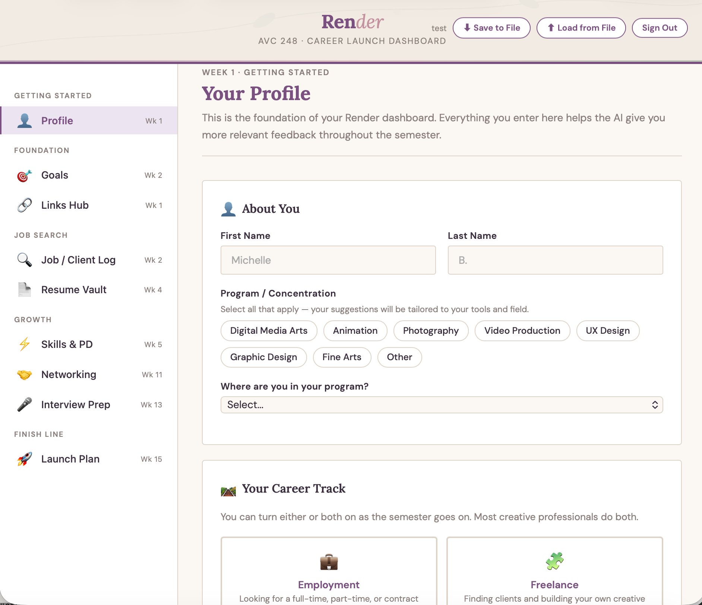
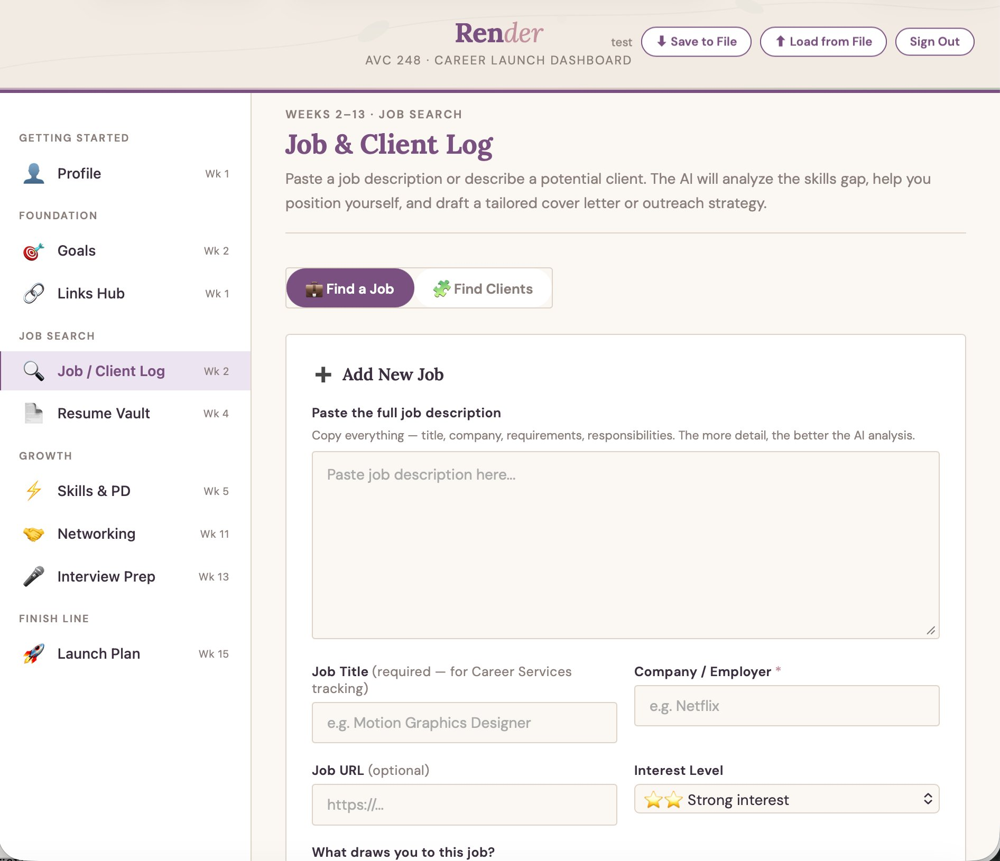
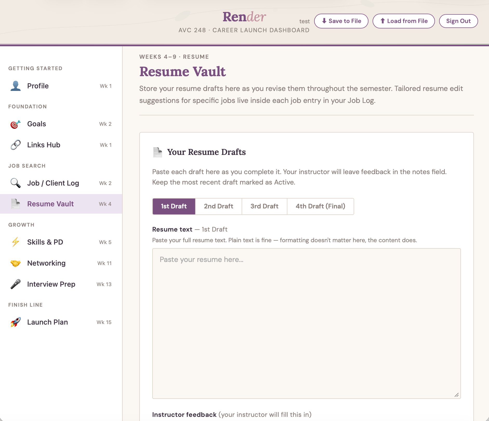
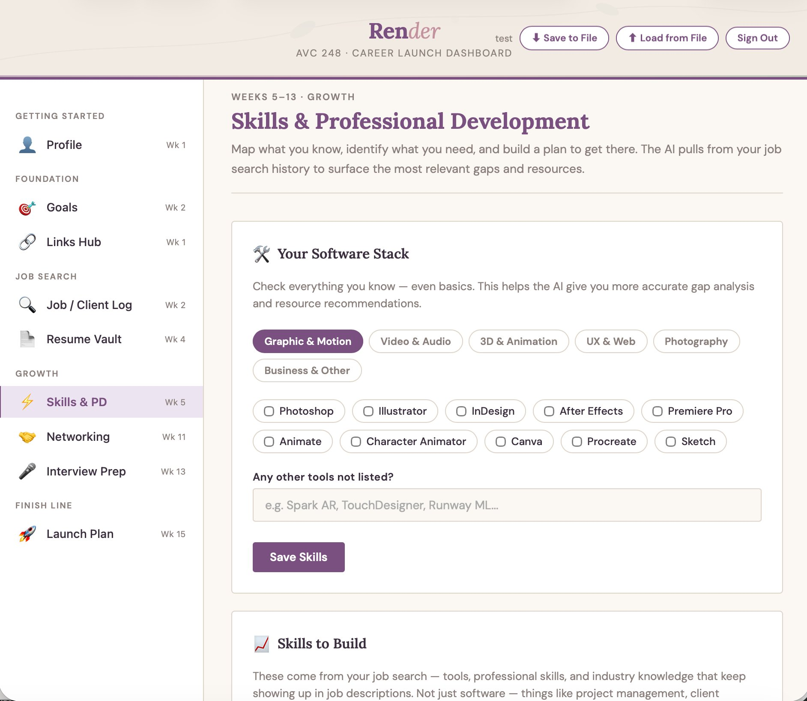
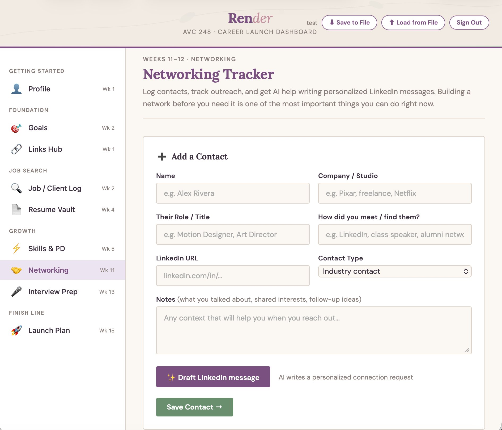
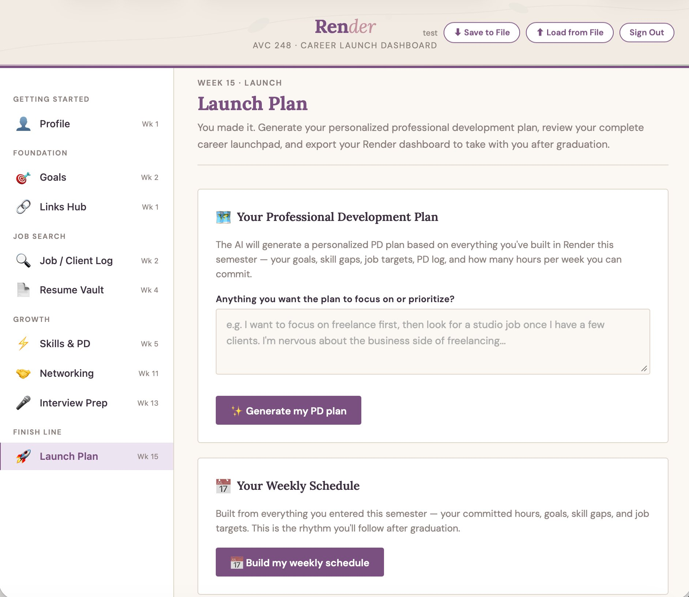

Why this exists
Students in Digital Media Arts complete career readiness work across the semester, resumes, job research, networking plans, interview practice, but when Canvas access ends at graduation, all of that work disappears. Render gives students a single tool they build themselves and take with them, organized around six areas that map directly to course competencies.
The tool is built in Claude as a single HTML file with no server dependencies. All student data stays on their device. AI assistance is embedded into each workflow, not as a blank prompt, but as structured coaching tied to the student's own goals and job targets.
What students build

Profile, Goals & Search Strings
Students define their dream job, creative identity, target market, and 3-year vision. The AI generates ready-to-paste search strings for LinkedIn, Indeed, and Glassdoor based on their specific goals and field.

Job & Client Log
Students paste job descriptions and receive AI-driven skills gap analysis, tailored cover letters, and career positioning advice. A freelance track generates prospect lists and outreach strategies. Entries feed Career Services via an automated pipeline.

Resume Vault
Four-draft revision workflow with instructor feedback integration. AI generates targeted resume edit suggestions tied to each saved job's specific requirements, not generic advice, but edits grounded in the actual posting.

Skills & Professional Development
Software stack mapping across six categories (~60 tools), plus professional skills and industry knowledge surfaced from saved job postings, things like project management, creative briefs, production workflows, and client communication. AI gap analysis, named learning resources, portfolio project ideas, and a PD activity log that tracks growth throughout the semester.

Networking & Interview Prep
Contact log with outreach tracking and AI-drafted LinkedIn messages personalized to each connection. Role-specific interview questions generated from saved job descriptions, answer practice with AI coaching feedback, and Big Interview integration.

Launch Plan & Export
A personalized 90-day PD plan and weekly schedule generated from everything the student built during the semester. The entire dashboard exports as a standalone HTML file the student keeps forever, no login, no server, no Canvas dependency.